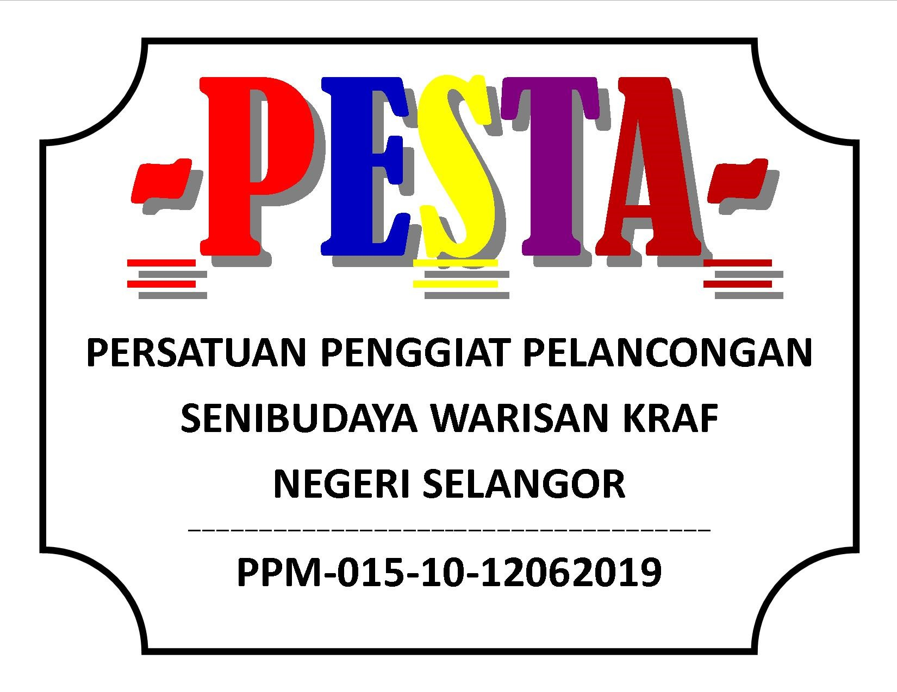
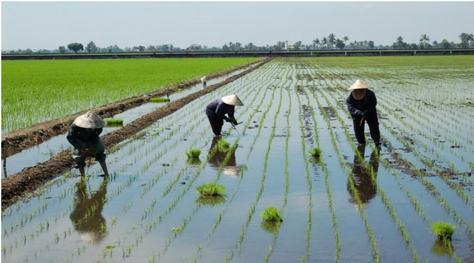

Persatuan Penggiat Senibudaya Warisan Kraf Negeri Selangor
"Memartabatkan Seni Kraf Tangan Selangor Ke Mata Dunia"
Selangor offers a unique blend of modern lifestyle and traditional heritage. From the paddy fields of Sekinchan to the royal heritage of Kuala Langat.

View AttractionsPESTA (Persatuan Penggiat Pelancongan Senibudaya Warisan Kraf Negeri Selangor) acts as the main body gathering craft heritage tourism activists.
We organize events like the ASEAN Heritage Train and Putrajaya Cultural Festival.